Lab Introduction
Until now, your Galaxy has had security disabled, allowing you to perform configuration and runtime actions without logging in. In this lab, you will enable Galaxy security using OS Groups as the authentication mode, configure permissions for roles, and test the ViewApp by logging in as different users to observe the impact on navigation items.
Objectives
Configure the Access Level property for navigation items
Configure the User Roles property for navigation items
Use TitleBarApp to login and logout
Verify runtime security in a ViewApp
User Group Configuration
The following table defines the user groups, access levels, and permissions used throughout this lab:
Step 1. On both the Templates tab and the Graphics tab, ensure that all objects and symbols are checked in.
Warning: You cannot configure security if any objects or symbols are checked out. Ensure everything is checked in before proceeding.
Step 2. On the Galaxy menu, select Configure → Security.
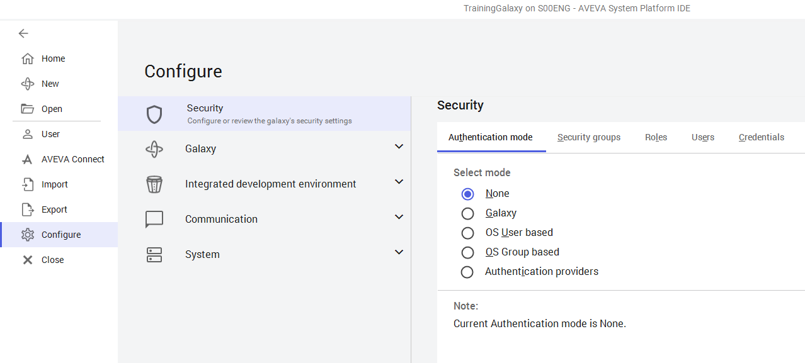
Galaxy menu — Select Configure → Security to open the Security configuration area.
Step 3. On the Authentication Mode tab, select OS Group based, and configure the Login time as 5000 ms.
Warning: Do NOT click Save until you get to a step that explicitly instructs you to do so. Clicking Save will restart the System Platform IDE. If you accidentally click Save, log back in as Administrator with no password.
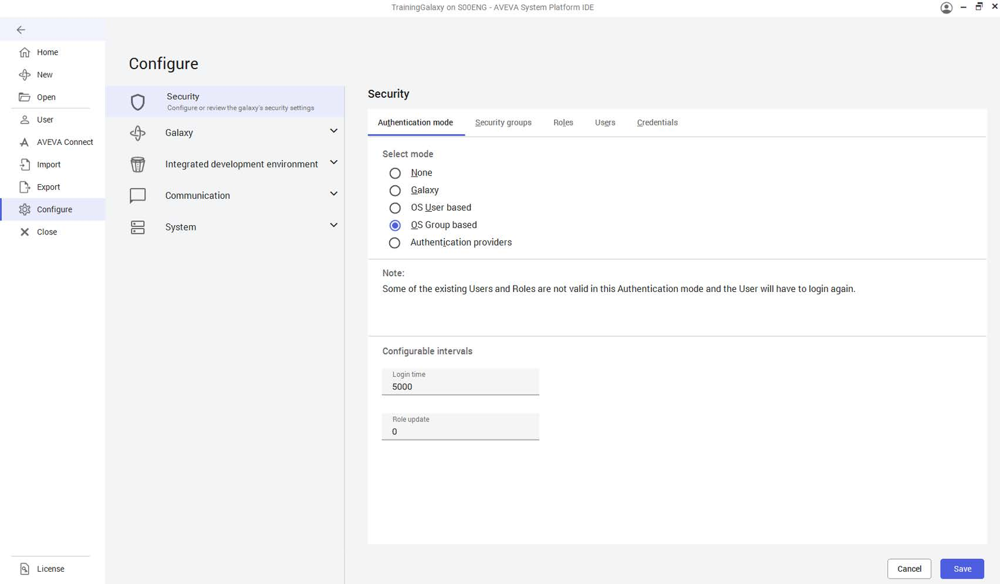
Authentication Mode — Select OS Group based and set Login time to 5000 ms. Do not click Save yet.
Part 2: Configure Security Roles
Step 4. On the Roles tab, in the Define security roles list, select the Default role.
Step 5. In General permissions, uncheck all IDE Permissions and SMC Permissions. You will need to scroll to see all permissions.
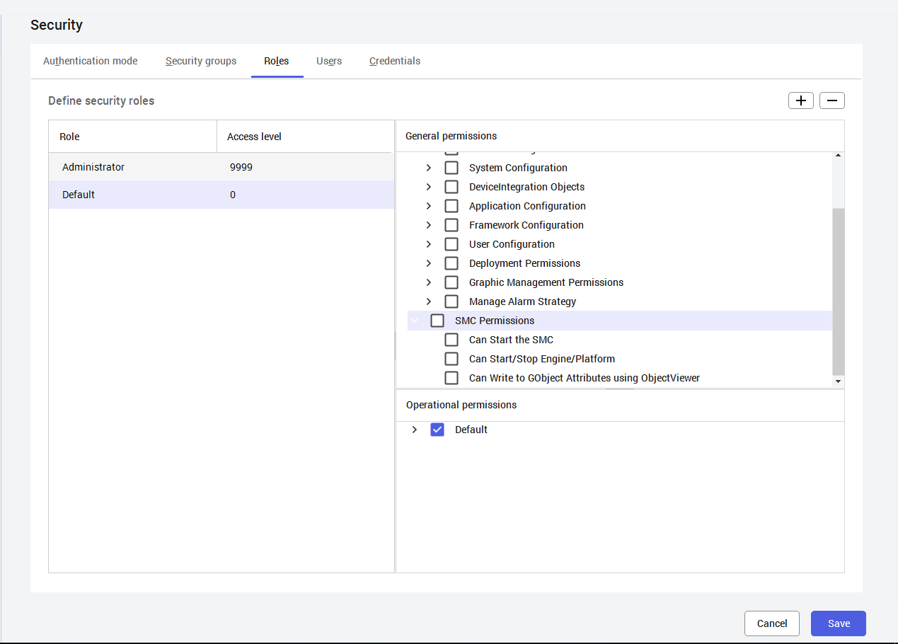
Roles tab — Default role selected. Uncheck all IDE Permissions and SMC Permissions in the General permissions section.
Step 6. In Operational permissions, expand Default and keep Alarms and the permissions beneath it checked, but uncheck all others.
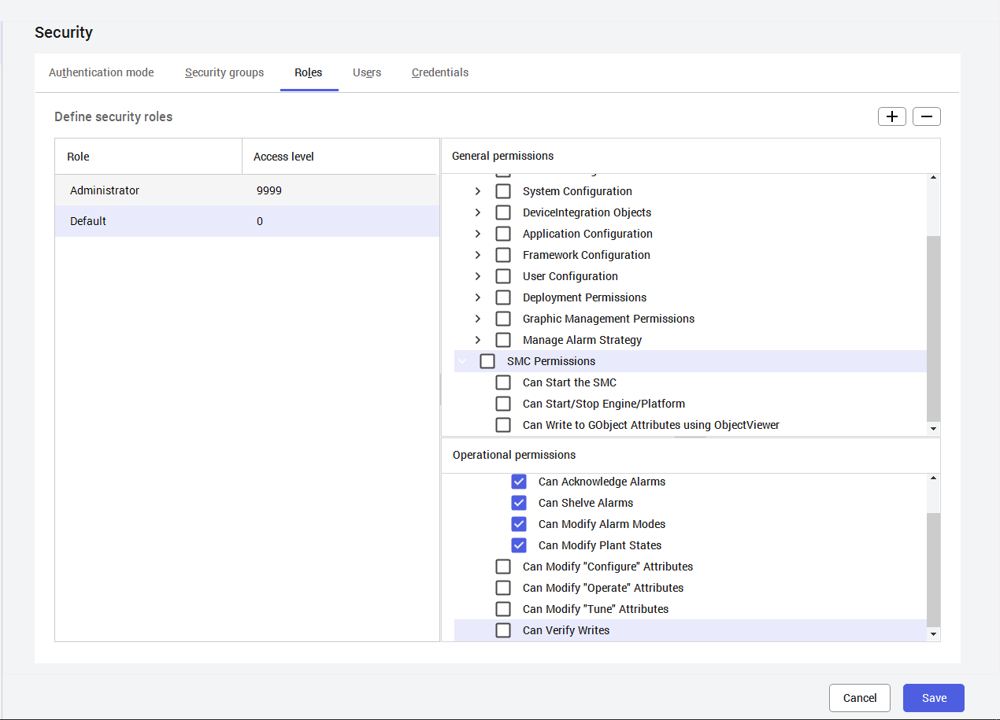
Operational permissions for Default role — Keep alarm-related permissions (Can Acknowledge, Can Shelve, Can Modify Alarm Modes, Can Modify Plant States) checked. Uncheck all others.
Step 7. Click the + (Add new Role) button to add roles from the domain user groups.
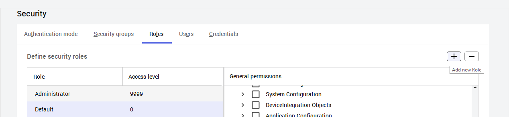
Click the + button to add a new role from domain user groups.
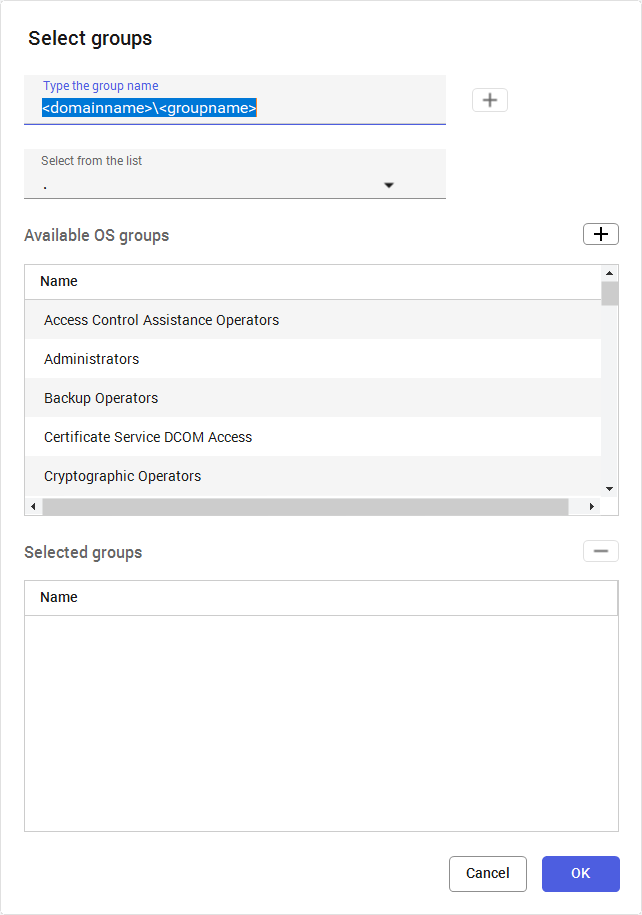
Select Groups dialog — Available OS groups are listed from the selected domain.
Step 8. On the right side of the Select from the list field, click the drop-down arrow and select a domain.
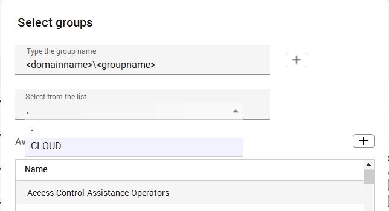
Select a domain from the dropdown (e.g., CLOUD). Your instructor will provide the domain information.
Step 9. In Available OS groups, press and hold Ctrl, and select: <domain>\Application Administrators, <domain>\Plant Operators 1, <domain>\Plant Operators 2, <domain>\Plant Supervisors 1.
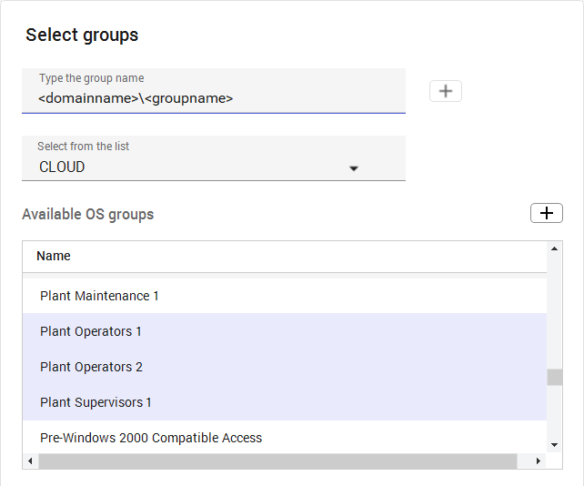
Select four groups using Ctrl+Click — Application Administrators, Plant Operators 1, Plant Operators 2, and Plant Supervisors 1.
Step 10. Click Add selected OS Group. The selected groups appear in the Selected groups area.
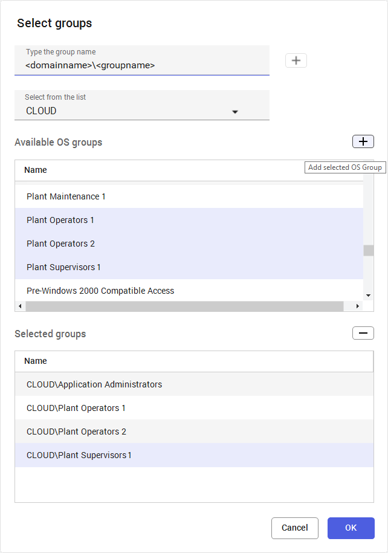
Selected groups — All four domain groups are now listed in the Selected groups area.
Step 11. Click OK to close the Select Groups dialog box. New roles appear in the Define security roles list.
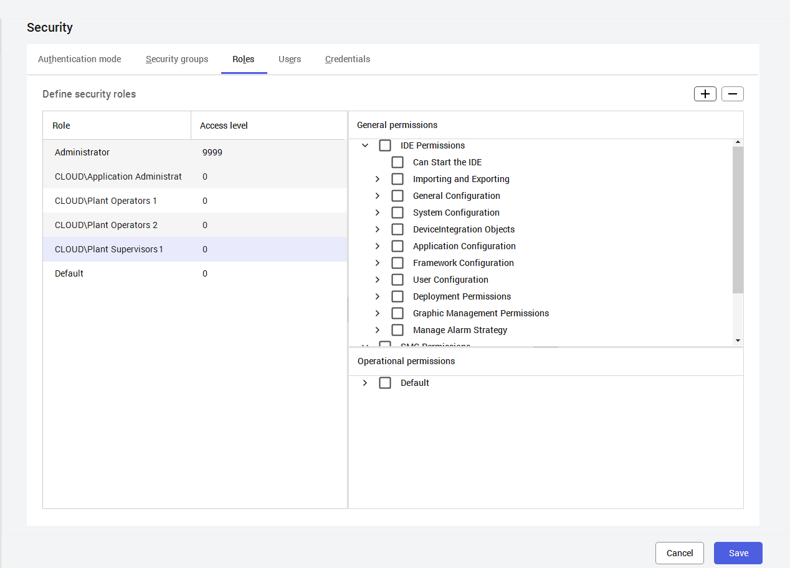
New roles added — Four domain groups now appear in the Define security roles list alongside Administrator and Default.
Part 3: Configure Role Permissions
Step 12. Select <domain>\Application Administrators and set Access level to 9999.
Step 13. Check IDE Permissions and SMC Permissions under General permissions.
Step 14. Check Default under Operational permissions.
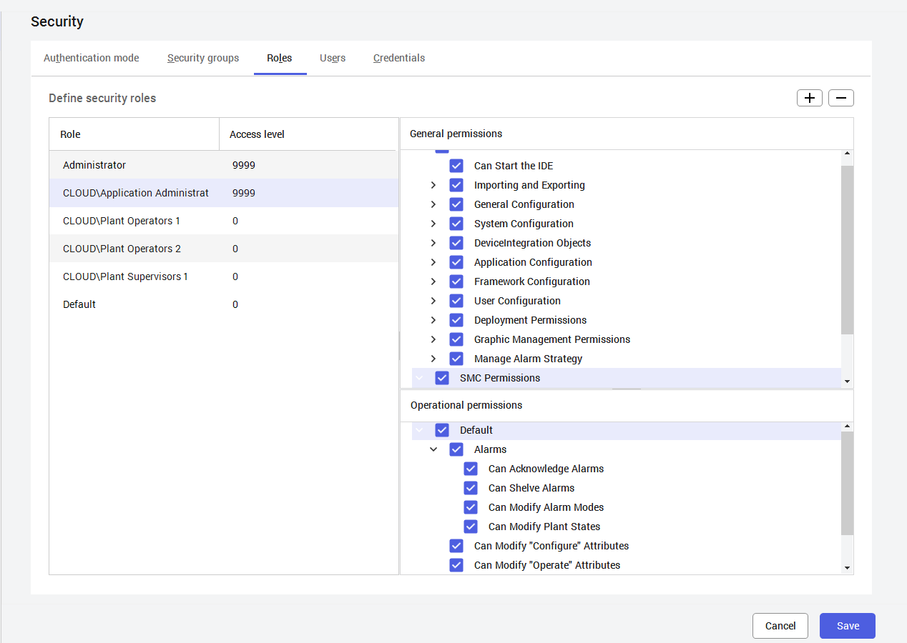
Application Administrators — Access Level 9999 with all General and Operational permissions granted.
Step 15. Select <domain>\Plant Operators 1 and set Access level to 2000.
Step 16. Expand Default in Operational permissions and check Can Modify "Operate" Attributes.
Step 20. Click Save to commit the configuration changes.
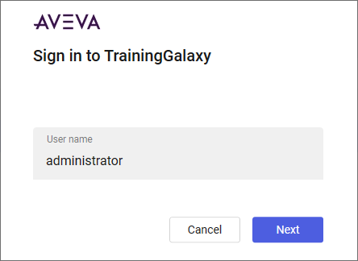
Click Save to commit security configuration changes.
Step 21. Enter User name as administrator and click Next.
Step 22. Leave the Password field blank and click Sign in.
Note: For this course, the default administrator is used as the development user with no password.
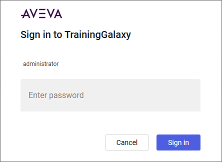
Sign in to TrainingGalaxy — Enter "administrator" as the username with no password.
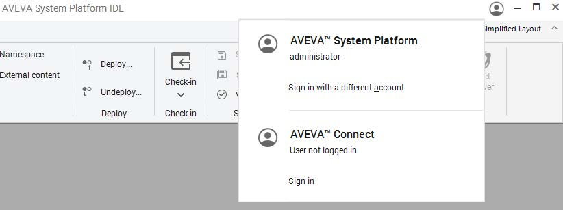
Verify login — The profile icon shows "administrator" as the logged-in user.
Part 5: Configure Navigation Item Security
Step 25. Open $ViewApp_Training in the ViewApp Editor.
Step 26. In the Navigation list, select Plant.
Step 27. On the Properties tab, from Security → Access Level dropdown, check 0 (Default). All access levels automatically become checked.
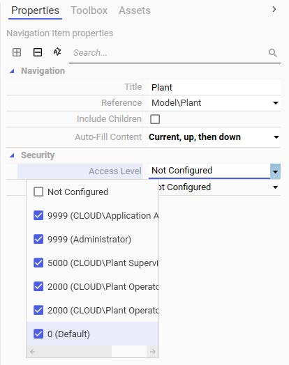
Plant navigation item — Access Level set to 0 (Default), which automatically selects all access levels. This ensures Plant is visible to any logged-in user.
Step 28. Expand Plant → Production and select Line1.
Step 29. On the Properties tab, from Security → User Roles dropdown, check: <domain>\Application Administrators and <domain>\Plant Operators 1.
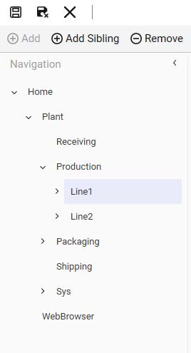
Navigation tree — Expand Plant → Production and select Line1.
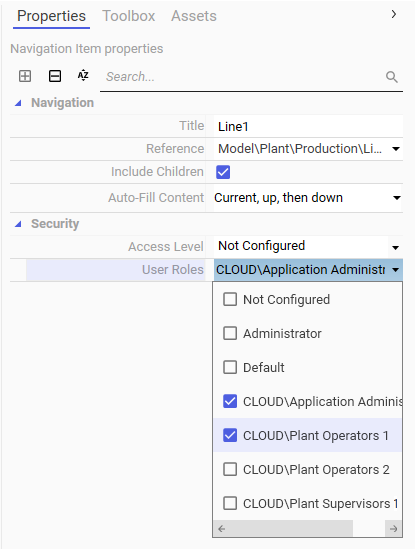
Line1 User Roles — Select Application Administrators and Plant Operators 1.
Step 30. Select Line2 in the Navigation list.
Step 31. From Security → User Roles dropdown, check: <domain>\Application Administrators and <domain>\Plant Operators 2.
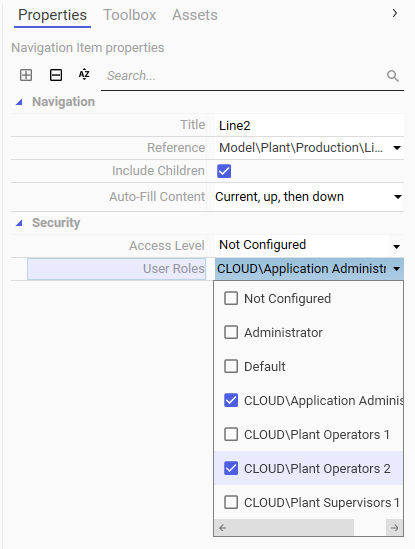
Line2 User Roles — Select Application Administrators and Plant Operators 2.
Step 32. Select Sys in the Navigation list.
Step 33. From Security → User Roles dropdown, check <domain>\Application Administrators only.
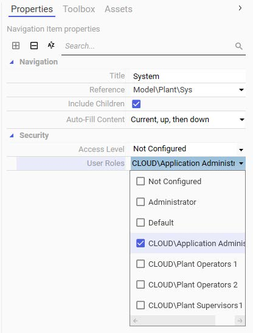
System navigation item — Only Application Administrators have access to the System section.
Step 34. Click Save to save the ViewApp template.
Part 6: Test Security in Preview Session
Step 35. In the ViewApp Editor, click Preview.
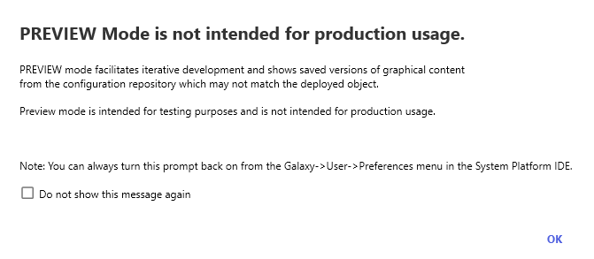
Preview mode dialog — Check "Do not show this message again" and click OK.
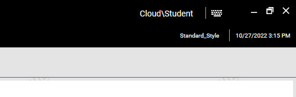
Admin view — Cloud\Student (Application Administrators) sees the full navigation tree including Line1, Line2, and System.
Step 37. Open the left slide-in pane and expand Plant and Production Lines. The current logged-in user (Application Administrators) has access to all navigation items.
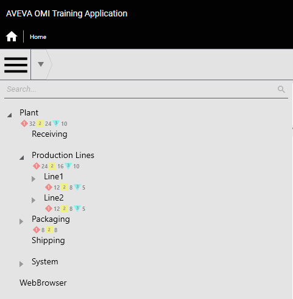
Full navigation tree for admin user — All items visible including Line1, Line2, and System with alarm counts.
Step 39. Click the logged-in user name and select Logout.
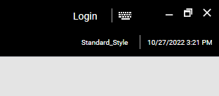
Logout — After logging out, the title bar shows "Login" and no user is logged in.
Step 40. Open the slide-in pane. With no user logged in, the entire Plant hierarchy is missing. Only WebBrowser (which has no security) is visible.
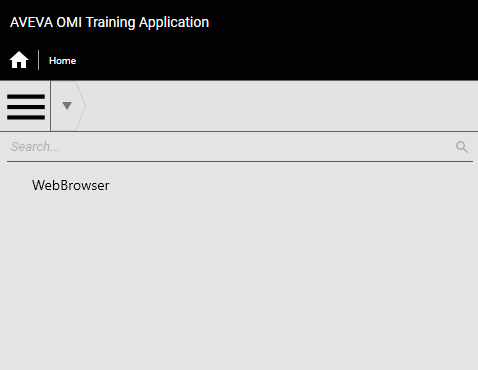
No user logged in — Only WebBrowser is visible. The Plant hierarchy is hidden because security requires login.
Step 42. On the title bar, click Login. Log in as <domain>\johnj with password.
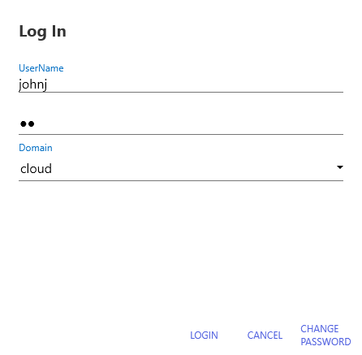
Log in as Plant Operators 1 user (johnj).
Step 44. Open the slide-in pane. Notice Line1 is visible but Line2 and System are hidden — the Plant Operators 1 group only has access to Line1.
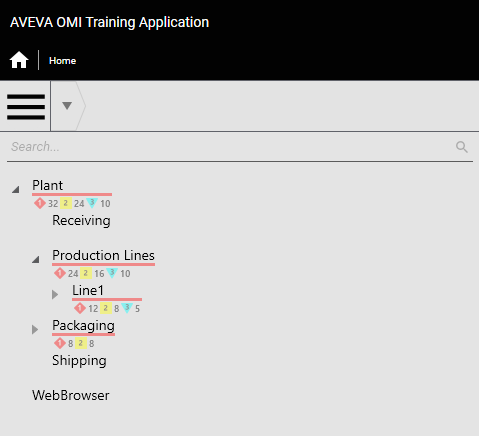
Plant Operators 1 view — Line1 is visible, but Line2 and System are hidden.
Step 46. Click the user name and select Switch User. Log in as <domain>\karent (Plant Supervisors 1).
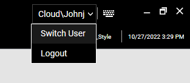
Switch User — Select this option to log in as a different user without fully logging out.
Step 47. Open the slide-in pane. Line1 and Line2 are not available — Plant Supervisors 1 does not have access to child items under Production Lines.
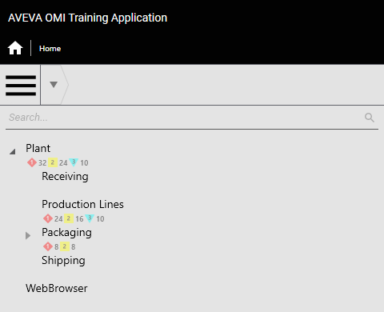
Plant Supervisors 1 view — Line1 and Line2 are not visible under Production Lines.
Step 50. Switch User to <domain>\nancyk (Plant Operators 2).
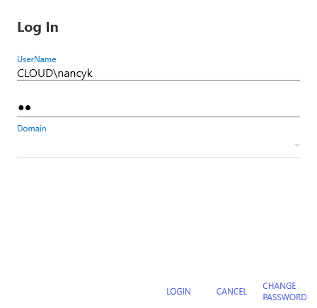
Plant Operators 2 view — Line2 is visible but Line1 is hidden.
Step 53. Switch back to <domain>\jamess (Application Administrators) and verify full access to all navigation items is restored.
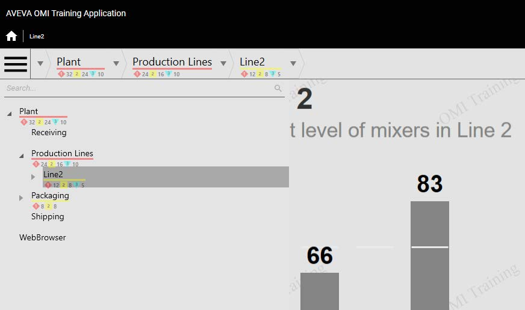
Application Administrators view — Full navigation restored with Line1, Line2, and System all visible.
Complete navigation tree for Application Administrators.
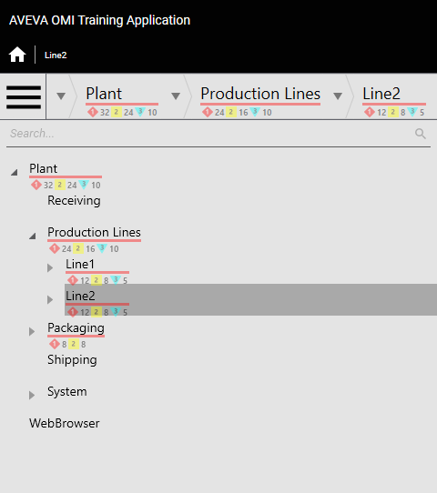
Final verification — Security is properly configured and tested with different user roles.
Key Takeaway: This lab demonstrated how Galaxy security with OS Group Based authentication controls navigation item visibility in a ViewApp. Each user role sees only the navigation items they are authorized to access, with parent items hiding all children when security blocks access.
Knowledge Check
Q1: Why must all objects and symbols be checked in before configuring security?
Security configuration cannot be performed while any objects or symbols are checked out. The system requires exclusive access to modify security settings.
Q2: What happens to child navigation items when a parent item is hidden due to security?
All child navigation items are automatically hidden regardless of their own security configurations. This is a cascading effect.
Q3: Which user group had access to Line2 but not Line1?
Plant Operators 2 — they were assigned to Line2's User Roles but not Line1's.
Q4: What happens when a user is not logged in to the ViewApp?
All navigation items with security configured are hidden. Only items without security settings (like WebBrowser in this lab) remain visible.
Q5: What is the benefit of using Switch User instead of Logout then Login?
Switch User allows changing the logged-in user without fully logging out and back in, providing a quicker way to test different user roles and permissions.